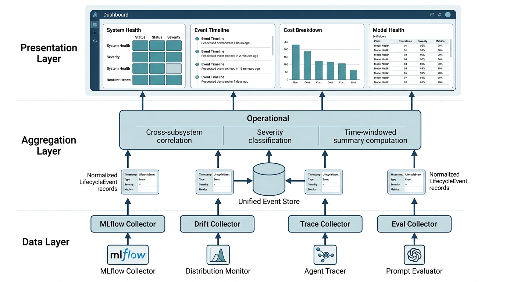

Prerequisites
This section brings together every component from the previous two sections: the experiment tracking (using MLflow, an open-source platform for managing the ML lifecycle including experiment logging, model versioning, and artifact storage) and drift detection from Section 22.1, and the prompt evaluation, cost tracking, and agent tracing from Section 22.2. You should also be familiar with the Discovery Workbench architecture from Chapter 6, as this dashboard becomes a new Workbench component. Basic knowledge of FastAPI (a modern Python web framework for building REST APIs) for serving endpoints and HTML/CSS for rendering is assumed; the Chapter 21 observability patterns provide useful context.
The previous sections built four operational subsystems: experiment tracking (which model version is best?), prompt management (which prompt version is active?), agent tracing (what happened during this agent run?), and drift detection (has the production data changed?). Each subsystem answers a different question, but in practice these questions arise together. A production alert fires: predictions are degrading. Is it model drift? A prompt regression? An agent tool failure? A data pipeline bug? The lifecycle dashboard integrates all four views into a single interface, letting you diagnose the root cause without switching between tools. This is the operational nervous system of a production AI platform.
1. Dashboard Architecture
When your model's predictions degrade at 2 AM, do you open the experiment tracker, the drift monitor, the agent tracer, or the prompt evaluator? The lifecycle dashboard eliminates that choice. It follows a three-layer architecture. The data layer collects metrics from MLflow, the prompt registry, the agent tracer, and the drift monitor. The aggregation layer computes summary statistics and detects anomalies. The presentation layer exposes the data through a REST (Representational State Transfer) API (Application Programming Interface) suitable for integration with the Discovery Workbench UI (user interface) or any frontend.
Teams that lack a unified lifecycle view routinely waste hours chasing symptoms across disconnected tools, only to discover that two independent failures (a data shift and an API outage, for instance) were masquerading as a single mysterious degradation. The technique that prevents this is deceptively simple: treat every operational subsystem as an event source feeding one shared timeline.
The key design decision: treat all four subsystems as event sources that emit structured records into a unified timeline. An experiment run, a prompt evaluation, an agent trace, and a drift check each carry a timestamp, metrics, and metadata. The dashboard aggregates these events by time window, model version, and component to produce a holistic health view. Figure 22.3 illustrates how these three layers connect the four subsystems to the consumer-facing API. Figure 22.3.1 illustrates Lifecycle Dashboard Three-Layer Architecture.

A unified event timeline is a chronologically ordered data store. It normalizes heterogeneous operational signals (training metrics, prompt scores, agent spans, drift statistics) into a common schema for joint querying, correlation, and visualization. It matters because production incidents rarely have a single cause: a drift alert and an agent tool failure may coincide, and only a timeline that contains both event types lets you see that they share a timestamp and a model version. The mechanism is straightforward. Each subsystem emits a structured record with a fixed set of fields (timestamp, severity, metrics, tags). The dashboard indexes those records into one queryable collection. Use a unified timeline whenever you operate more than one AI subsystem in production; if you run only a single model with no agent layer, a subsystem-specific dashboard (such as MLflow's built-in UI) is sufficient. In short: one timeline that holds every subsystem's events turns "something is broken somewhere" into "these two events, at this timestamp, on this model version, explain the failure."
"""
Lifecycle Dashboard: unified data model for experiments,
evaluations, traces, and drift events.
"""
from dataclasses import dataclass, field
from datetime import datetime, timedelta
from enum import Enum
from typing import Any
import json
class EventType(Enum):
EXPERIMENT_RUN = "experiment_run"
PROMPT_EVAL = "prompt_eval"
AGENT_TRACE = "agent_trace"
DRIFT_CHECK = "drift_check"
MODEL_PROMOTION = "model_promotion"
COST_ALERT = "cost_alert"
@dataclass
class LifecycleEvent:
"""A single event in the unified lifecycle timeline."""
event_type: EventType
timestamp: str
source: str # Which subsystem produced this
summary: str # Human-readable one-liner
metrics: dict[str, float] = field(default_factory=dict)
metadata: dict[str, Any] = field(default_factory=dict)
severity: str = "info" # info, warning, critical
model_version: str = ""
tags: list[str] = field(default_factory=list)
class LifecycleStore:
"""In-memory event store for the lifecycle dashboard."""
def __init__(self):
self.events: list[LifecycleEvent] = []
def add(self, event: LifecycleEvent) -> None:
"""Add an event to the store."""
self.events.append(event)
def query(
self,
event_type: EventType | None = None,
since: datetime | None = None,
severity: str | None = None,
model_version: str | None = None,
limit: int = 100
) -> list[LifecycleEvent]:
"""Query events with filters."""
results = self.events
if event_type:
results = [e for e in results
if e.event_type == event_type]
if since:
since_str = since.isoformat()
results = [e for e in results
if e.timestamp >= since_str]
if severity:
results = [e for e in results
if e.severity == severity]
if model_version:
results = [e for e in results
if e.model_version == model_version]
return sorted(
results, key=lambda e: e.timestamp, reverse=True
)[:limit]
def summary(self, hours: int = 24) -> dict:
"""Compute summary statistics for the dashboard."""
since = datetime.now() - timedelta(hours=hours)
recent = self.query(since=since, limit=10000)
by_type = {}
for evt_type in EventType:
typed = [e for e in recent
if e.event_type == evt_type]
by_type[evt_type.value] = {
"count": len(typed),
"warnings": sum(
1 for e in typed if e.severity == "warning"
),
"critical": sum(
1 for e in typed if e.severity == "critical"
),
}
# Aggregate key metrics
experiment_runs = [
e for e in recent
if e.event_type == EventType.EXPERIMENT_RUN
]
best_f1 = max(
(e.metrics.get("f1", 0) for e in experiment_runs),
default=0
)
drift_checks = [
e for e in recent
if e.event_type == EventType.DRIFT_CHECK
]
drift_alerts = sum(
1 for e in drift_checks if e.severity != "info"
)
cost_events = [
e for e in recent
if e.event_type == EventType.AGENT_TRACE
]
total_cost = sum(
e.metrics.get("cost", 0) for e in cost_events
)
return {
"time_window_hours": hours,
"total_events": len(recent),
"by_type": by_type,
"highlights": {
"best_experiment_f1": round(best_f1, 4),
"drift_alerts": drift_alerts,
"total_agent_cost": round(total_cost, 4),
"active_warnings": sum(
1 for e in recent if e.severity == "warning"
),
"active_critical": sum(
1 for e in recent if e.severity == "critical"
),
}
}Mental Model
Think of the collector layer as a hospital's central nursing station. Each ward (cardiology, neurology, radiology, the pharmacy) generates its own vital-sign readings and lab reports in its own format: heart rate on one chart, brain scans in another system, blood panels on a third. The nursing station does not replace any ward's equipment. Instead, it translates every ward's output into a single patient timeline, so a nurse who sees a simultaneous blood-pressure spike and an abnormal lab result can correlate them instantly rather than walking between four different wards. The collector adapters in the lifecycle dashboard work the same way: each one reads from one subsystem (MLflow, the drift monitor, the agent tracer, the prompt evaluator) and writes a normalized event into a shared timeline, enabling cross-subsystem correlation that no single tool provides on its own.
Step-Through: Severity Classification in the Lifecycle Store
Trace through the summary() method with four concrete events added in the last hour:
Event A: EXPERIMENT_RUN, severity="info", metrics={"f1": 0.87} (where F1 is the harmonic mean of precision and recall, ranging from 0 to 1).
Event B: DRIFT_CHECK, severity="warning", metrics={"overall_mmd": 0.035} (where MMD, Maximum Mean Discrepancy, is a statistical distance measuring how much two distributions differ).
Event C: AGENT_TRACE, severity="critical", metrics={"cost": 0.12, "errors": 2}.
Event D: PROMPT_EVAL, severity="info", metrics={"overall_score": 0.84}.
Step 1: by_type counts each EventType. Result: experiment_run={count:1, warnings:0, critical:0}, drift_check={count:1, warnings:1, critical:0}, agent_trace={count:1, warnings:0, critical:1}, prompt_eval={count:1, warnings:0, critical:0}.
Step 2: best_f1 scans experiment runs. Only Event A qualifies: best_f1 = 0.87.
Step 3: drift_alerts counts drift events where severity != "info". Event B has severity="warning", so drift_alerts = 1.
Step 4: total_cost sums the "cost" metric across agent traces. Only Event C: total_cost = 0.12.
Step 5: highlights aggregation: active_warnings = 1 (Event B), active_critical = 1 (Event C).
The API wrapper would return status="degraded" because active_critical > 0.
2. Collector: Bridging Subsystems to the Dashboard
Each subsystem produces data in its own format. The collector layer translates subsystem
outputs into LifecycleEvent records. This is a classic adapter pattern:
each collector knows how to read from one subsystem and write to the unified store.
"""
Collectors: adapters that bridge MLflow, prompt evaluation,
agent tracing, and drift monitoring into the unified store.
"""
from datetime import datetime
class MLflowCollector:
"""Collect experiment runs from MLflow into the lifecycle store."""
def __init__(self, store: LifecycleStore,
mlflow_tracking_uri: str = "http://localhost:5000"):
self.store = store
self.tracking_uri = mlflow_tracking_uri
def collect_recent_runs(self, experiment_name: str,
hours: int = 24) -> int:
"""Pull recent MLflow runs and emit lifecycle events."""
from mlflow.tracking import MlflowClient
import mlflow
mlflow.set_tracking_uri(self.tracking_uri)
client = MlflowClient()
experiment = client.get_experiment_by_name(experiment_name)
if not experiment:
return 0
# Query runs from the last N hours
runs = client.search_runs(
experiment_ids=[experiment.experiment_id],
order_by=["start_time DESC"],
max_results=50
)
count = 0
for run in runs:
metrics = run.data.metrics
params = run.data.params
# Determine severity based on metric thresholds
f1 = metrics.get("f1", 0)
severity = "info"
if f1 < 0.7:
severity = "warning"
if f1 < 0.5:
severity = "critical"
self.store.add(LifecycleEvent(
event_type=EventType.EXPERIMENT_RUN,
timestamp=datetime.fromtimestamp(
run.info.start_time / 1000
).isoformat(),
source="mlflow",
summary=(
f"Run {run.info.run_id[:8]}: "
f"F1={f1:.3f}, AUC={metrics.get('roc_auc', 0):.3f}" # ROC AUC: area under the receiver operating characteristic curve
),
metrics=dict(metrics),
metadata=dict(params),
severity=severity,
model_version=params.get("model_version", ""),
tags=["experiment", experiment_name]
))
count += 1
return count
class DriftCollector:
"""Collect drift check results into the lifecycle store."""
def __init__(self, store: LifecycleStore):
self.store = store
def record_check(self, drift_report: dict,
model_version: str = "") -> None:
"""Convert a DriftMonitor report to a lifecycle event."""
drifted = drift_report.get("drifted_features", [])
mmd = drift_report.get("overall_mmd", 0)
if not drifted and mmd < 0.01:
severity = "info"
summary = "No significant drift detected"
elif len(drifted) <= 2 and mmd < 0.05:
severity = "warning"
summary = f"Moderate drift in: {', '.join(drifted)}"
else:
severity = "critical"
summary = (
f"Significant drift in {len(drifted)} features, "
f"MMD={mmd:.4f}"
)
self.store.add(LifecycleEvent(
event_type=EventType.DRIFT_CHECK,
timestamp=datetime.now().isoformat(),
source="drift_monitor",
summary=summary,
metrics={
"overall_mmd": mmd,
"n_drifted_features": len(drifted),
# PSI: Population Stability Index, a measure of
# how much a feature's distribution has shifted.
**{f"psi_{k}": v["psi"]
for k, v in drift_report.get(
"feature_psi", {}
).items()}
},
metadata={"drifted_features": drifted},
severity=severity,
model_version=model_version,
tags=["drift", "monitoring"]
))
class TraceCollector:
"""Collect agent traces into the lifecycle store."""
def __init__(self, store: LifecycleStore):
self.store = store
def record_trace(self, trace: dict) -> None:
"""Convert an AgentTracer trace to a lifecycle event."""
stats = trace.get("stats", {})
duration = trace.get("duration_ms", 0)
# Cost estimation from token usage
# Rates below are placeholders; replace with your
# provider's actual per-token pricing (circa 2024).
input_tokens = stats.get("total_input_tokens", 0)
output_tokens = stats.get("total_output_tokens", 0)
# Price per token in USD: $3 per million input, $15 per
# million output; dividing by 1e6 converts to dollars.
estimated_cost = (input_tokens * 3 + output_tokens * 15) / 1e6
# Determine severity
severity = "info"
if stats.get("errors", 0) > 0:
severity = "warning"
if trace.get("status") == "failed":
severity = "critical"
if duration > 30000 and severity == "info": # Over 30 seconds
severity = "warning" # Escalate, but do not downgrade critical
self.store.add(LifecycleEvent(
event_type=EventType.AGENT_TRACE,
timestamp=datetime.fromtimestamp(
trace.get("start_time", 0)
).isoformat(),
source="agent_tracer",
summary=(
f"Agent '{trace.get('name', 'unknown')}': "
f"{stats.get('llm_calls', 0)} LLM calls, "
f"{stats.get('tool_calls', 0)} tool calls, "
f"{duration:.0f}ms"
),
metrics={
"duration_ms": duration,
"llm_calls": stats.get("llm_calls", 0),
"tool_calls": stats.get("tool_calls", 0),
"errors": stats.get("errors", 0),
"input_tokens": input_tokens,
"output_tokens": output_tokens,
"cost": estimated_cost,
},
severity=severity,
tags=["agent", trace.get("name", "unknown")]
))
class EvalCollector:
"""Collect prompt evaluation results into the lifecycle store."""
def __init__(self, store: LifecycleStore):
self.store = store
def record_eval(self, prompt_name: str, version: int,
eval_results: dict) -> None:
"""Convert evaluation batch results to a lifecycle event."""
overall = eval_results.get("overall_mean", 0)
n_cases = eval_results.get("n_cases", 0)
severity = "info"
if overall < 0.7:
severity = "warning"
if overall < 0.5:
severity = "critical"
criteria_scores = {
k: v["mean"]
for k, v in eval_results.get("criteria", {}).items()
}
self.store.add(LifecycleEvent(
event_type=EventType.PROMPT_EVAL,
timestamp=datetime.now().isoformat(),
source="prompt_evaluator",
summary=(
f"Prompt '{prompt_name}' v{version}: "
f"score={overall:.3f} over {n_cases} cases"
),
metrics={
"overall_score": overall,
"n_cases": n_cases,
**criteria_scores
},
metadata={
"prompt_name": prompt_name,
"prompt_version": version,
"auto_check_pass_rates": eval_results.get(
"auto_check_pass_rate", {}
)
},
severity=severity,
tags=["evaluation", prompt_name]
))Checkpoint
So far: the data model defines a common event schema (type, timestamp, severity, metrics), the in-memory store supports filtered queries, and four collector adapters translate each subsystem's native output into that shared schema, giving you a single timeline of all operational signals.
With every subsystem now writing normalized events into the same store, the remaining challenge is giving consumers a single entry point to query, filter, and visualize those events.
3. Dashboard API
The dashboard exposes its data through a FastAPI service that the Discovery Workbench (or any frontend) can query. The API provides three endpoint families: a summary endpoint for the overview panel, a timeline endpoint for the event feed, and detail endpoints for drilling into specific events.
Common Misconception
A frequent mistake is treating the lifecycle dashboard as a passive visualization layer that simply renders charts from raw subsystem data. The dashboard is not a skin on top of MLflow plus a tracing UI; it is an aggregation and correlation engine that computes cross-subsystem summaries (such as "drift alert count vs. agent error rate in the same time window") and assigns severity levels that no individual subsystem can determine on its own. If you skip the aggregation layer and just embed four iframes side by side, you lose the ability to correlate events across subsystems, which is the entire reason the dashboard exists.
"""
Lifecycle Dashboard API: FastAPI service that exposes
the unified lifecycle data to the Discovery Workbench UI.
"""
from fastapi import FastAPI, Query
from fastapi.middleware.cors import CORSMiddleware
from datetime import datetime, timedelta
from typing import Optional
import json
app = FastAPI(
title="Discovery AI Lifecycle Dashboard",
description="Unified MLOps, LLMOps, and AgentOps monitoring",
version="1.0.0"
)
app.add_middleware(
CORSMiddleware, # Cross-Origin Resource Sharing: controls which domains can call this API
allow_origins=["*"], # Restrict in production
allow_methods=["GET"],
allow_headers=["*"],
)
# Initialize the store and collectors
store = LifecycleStore()
mlflow_collector = MLflowCollector(store)
drift_collector = DriftCollector(store)
trace_collector = TraceCollector(store)
eval_collector = EvalCollector(store)
@app.get("/api/v1/summary")
async def get_summary(hours: int = Query(default=24, ge=1, le=168)):
"""
Dashboard summary: key metrics and alert counts
for the specified time window.
"""
summary = store.summary(hours=hours)
return {
"status": "healthy" if summary["highlights"]["active_critical"] == 0
else "degraded",
**summary
}
@app.get("/api/v1/timeline")
async def get_timeline(
hours: int = Query(default=24, ge=1, le=168),
event_type: Optional[str] = None,
severity: Optional[str] = None,
limit: int = Query(default=50, ge=1, le=500)
):
"""
Event timeline: chronological feed of lifecycle events,
filterable by type and severity.
"""
since = datetime.now() - timedelta(hours=hours)
evt_type = EventType(event_type) if event_type else None
events = store.query(
event_type=evt_type,
since=since,
severity=severity,
limit=limit
)
return {
"count": len(events),
"events": [
{
"type": e.event_type.value,
"timestamp": e.timestamp,
"summary": e.summary,
"severity": e.severity,
"metrics": e.metrics,
"tags": e.tags,
}
for e in events
]
}
@app.get("/api/v1/models/{model_version}/health")
async def get_model_health(model_version: str):
"""
Model health: aggregated view of a specific model version
combining experiment metrics, drift status, and agent performance.
"""
# Gather all events for this model version
all_events = store.query(model_version=model_version, limit=1000)
# Latest experiment metrics
experiments = [
e for e in all_events
if e.event_type == EventType.EXPERIMENT_RUN
]
latest_metrics = experiments[0].metrics if experiments else {}
# Latest drift status
drift_events = [
e for e in all_events
if e.event_type == EventType.DRIFT_CHECK
]
latest_drift = drift_events[0] if drift_events else None
# Agent performance statistics
traces = [
e for e in all_events
if e.event_type == EventType.AGENT_TRACE
]
avg_latency = (
sum(e.metrics.get("duration_ms", 0) for e in traces) / len(traces)
if traces else 0
)
error_rate = (
sum(1 for e in traces if e.metrics.get("errors", 0) > 0) / len(traces)
if traces else 0
)
return {
"model_version": model_version,
"experiment_metrics": latest_metrics,
"drift_status": {
"severity": latest_drift.severity if latest_drift else "unknown",
"summary": latest_drift.summary if latest_drift else "No checks",
"mmd": (latest_drift.metrics.get("overall_mmd", 0)
if latest_drift else None),
},
"agent_performance": {
"total_traces": len(traces),
"avg_latency_ms": round(avg_latency, 1),
"error_rate": round(error_rate, 3),
"total_cost": round(
sum(e.metrics.get("cost", 0) for e in traces), 4
),
}
}
@app.get("/api/v1/cost/breakdown")
async def get_cost_breakdown(hours: int = Query(default=24, ge=1, le=168)):
"""
Cost breakdown: token usage and spend by agent, step, and model.
"""
since = datetime.now() - timedelta(hours=hours)
traces = store.query(
event_type=EventType.AGENT_TRACE,
since=since,
limit=10000
)
by_agent = {}
for t in traces:
agent = next(
(tag for tag in t.tags if tag != "agent"), "unknown"
)
if agent not in by_agent:
by_agent[agent] = {
"total_cost": 0, "n_traces": 0,
"total_input_tokens": 0, "total_output_tokens": 0
}
by_agent[agent]["total_cost"] += t.metrics.get("cost", 0)
by_agent[agent]["n_traces"] += 1
by_agent[agent]["total_input_tokens"] += t.metrics.get(
"input_tokens", 0
)
by_agent[agent]["total_output_tokens"] += t.metrics.get(
"output_tokens", 0
)
total_cost = sum(v["total_cost"] for v in by_agent.values())
return {
"time_window_hours": hours,
"total_cost": round(total_cost, 4),
"by_agent": {
k: {**v, "total_cost": round(v["total_cost"], 4),
"pct_of_total": round(v["total_cost"] / total_cost * 100, 1)
if total_cost > 0 else 0}
for k, v in sorted(
by_agent.items(),
key=lambda x: x[1]["total_cost"],
reverse=True
)
}
}The Discovery Workbench, introduced in Chapter 6 and extended throughout the book, is a platform for running scientific discovery workflows. The lifecycle dashboard is its immune system: the subsystem that detects when something is going wrong (drift), diagnoses what is wrong (trace analysis), and suggests remediation (retrain the model, roll back the prompt, disable the failing tool). Without this immune system, the Workbench is a powerful machine with no self-awareness. With it, the Workbench can maintain its own operational health, which is a prerequisite for the autonomous discovery systems of Part VII.
4. Putting It All Together: End-to-End Lifecycle Run
The following scenario exercises every component end to end. A research team deploys a molecular activity classifier, monitors it for drift, evaluates their literature review agent's prompts, tracks agent execution costs, and uses the dashboard to diagnose and resolve a production issue.
"""
End-to-end lifecycle scenario: from model training through
production monitoring, drift detection, and remediation.
"""
import numpy as np
from datetime import datetime
def run_lifecycle_demo():
"""
Complete lifecycle demonstration integrating all components
from Sections 22.1 and 22.2.
"""
# ---- Phase 1: Train and Track ----
# (Using the MLflow tracking from Section 22.1)
print("Phase 1: Training model with experiment tracking...")
# Simulate training metrics for two model versions
store = LifecycleStore()
eval_coll = EvalCollector(store)
drift_coll = DriftCollector(store)
trace_coll = TraceCollector(store)
# Record experiment runs
store.add(LifecycleEvent(
event_type=EventType.EXPERIMENT_RUN,
timestamp=datetime.now().isoformat(),
source="mlflow",
summary="Run abc123: F1=0.87, AUC=0.93",
metrics={"f1": 0.87, "roc_auc": 0.93, "cv_std": 0.03},
model_version="v1.0",
severity="info",
tags=["experiment", "molecule_activity"]
))
store.add(LifecycleEvent(
event_type=EventType.MODEL_PROMOTION,
timestamp=datetime.now().isoformat(),
source="model_registry",
summary="Model v1.0 promoted to Production",
metadata={"from_stage": "Staging", "to_stage": "Production"},
model_version="v1.0",
severity="info",
tags=["promotion"]
))
# ---- Phase 2: Monitor for Drift ----
print("Phase 2: Running drift detection...")
# Simulate: first check is clean
drift_coll.record_check({
"overall_mmd": 0.003,
"feature_psi": {
"mol_weight": {"psi": 0.05, "status": "ok"},
"logp": {"psi": 0.03, "status": "ok"},
"tpsa": {"psi": 0.04, "status": "ok"}
},
"drifted_features": [],
"action_required": False
}, model_version="v1.0")
# Simulate: second check detects drift
drift_coll.record_check({
"overall_mmd": 0.035,
"feature_psi": {
"mol_weight": {"psi": 0.42, "status": "drift"},
"logp": {"psi": 0.08, "status": "ok"},
"tpsa": {"psi": 0.31, "status": "drift"}
},
"drifted_features": ["mol_weight", "tpsa"],
"action_required": True
}, model_version="v1.0")
# ---- Phase 3: Evaluate Prompt Changes ----
print("Phase 3: Evaluating prompt versions...")
eval_coll.record_eval("paper_summarizer", 1, {
"overall_mean": 0.72,
"n_cases": 50,
"criteria": {
"factual_accuracy": {"mean": 0.75},
"completeness": {"mean": 0.68},
"conciseness": {"mean": 0.85}
},
"auto_check_pass_rate": {
"has_hypothesis": 0.82,
"length_ok": 0.96
}
})
eval_coll.record_eval("paper_summarizer", 2, {
"overall_mean": 0.84,
"n_cases": 50,
"criteria": {
"factual_accuracy": {"mean": 0.81},
"completeness": {"mean": 0.89},
"conciseness": {"mean": 0.83}
},
"auto_check_pass_rate": {
"has_hypothesis": 0.96,
"length_ok": 0.94
}
})
# ---- Phase 4: Track Agent Execution ----
print("Phase 4: Recording agent traces...")
trace_coll.record_trace({
"trace_id": "trace_001",
"name": "research_agent",
"start_time": datetime.now().timestamp(),
"duration_ms": 4500,
"status": "completed",
"final_output": "Found 15 relevant papers...",
"stats": {
"total_spans": 5,
"llm_calls": 3,
"tool_calls": 2,
"errors": 0,
"total_input_tokens": 12000,
"total_output_tokens": 2500,
"total_llm_latency_ms": 3200,
"total_tool_latency_ms": 1100,
}
})
# Agent trace with errors (tool failure)
trace_coll.record_trace({
"trace_id": "trace_002",
"name": "research_agent",
"start_time": datetime.now().timestamp(),
"duration_ms": 15000,
"status": "completed",
"final_output": "Partial results (PubMed unavailable)...",
"stats": {
"total_spans": 8,
"llm_calls": 5,
"tool_calls": 3,
"errors": 2,
"total_input_tokens": 25000,
"total_output_tokens": 4000,
"total_llm_latency_ms": 8000,
"total_tool_latency_ms": 6500,
}
})
# ---- Phase 5: Dashboard Summary ----
print("\nPhase 5: Dashboard summary")
summary = store.summary(hours=24)
print(json.dumps(summary, indent=2))
# ---- Phase 6: Respond to Drift Alert ----
print("\nPhase 6: Drift response")
critical_events = store.query(severity="critical")
for event in critical_events:
print(f" CRITICAL: {event.summary}")
if event.event_type == EventType.DRIFT_CHECK:
print(" Action: Trigger model retraining pipeline")
print(f" Drifted features: "
f"{event.metadata.get('drifted_features', [])}")
return store
# Run the complete lifecycle demonstration
# demo_store = run_lifecycle_demo()Monday morning, the research team's Discovery Workbench shows a "degraded" status on the lifecycle dashboard. The summary endpoint reports two critical events. Drilling in, they find: (1) a drift alert showing Population Stability Index (PSI) = 0.42 on molecular weight and PSI = 0.31 on Topological Polar Surface Area (TPSA), triggered because the medicinal chemistry team submitted a new compound series over the weekend; (2) an agent trace showing the research agent's PubMed tool failed twice, causing the agent to retry with higher token usage (\$0.12 per request instead of the usual \$0.04). The cost breakdown endpoint confirms a 3x cost spike in the "research_agent" category. The team responds on two fronts: they trigger a model retraining pipeline that includes the new compound series (resolving the drift alert within 2 hours), and they check the PubMed API status page (discovering a scheduled maintenance window, explaining the tool failures). By noon, the dashboard shows "healthy" status across all four subsystems. Without the unified dashboard, these two independent issues would have appeared as a single mysterious "predictions are wrong" complaint, requiring hours of investigation across separate tools.
5. Scheduling and Automation
A dashboard that requires manual refresh is, in practice, a dashboard that rarely gets checked. The lifecycle dashboard becomes truly useful only when its collectors run automatically on a schedule. Drift checks run hourly against the latest production data. Experiment collectors poll MLflow every 15 minutes. Agent traces stream in real time. Prompt evaluations trigger on every prompt version change.
"""
Scheduled lifecycle monitoring: automated collection
and alerting for continuous operational awareness.
"""
import asyncio
from datetime import datetime
class LifecycleScheduler:
"""Run lifecycle checks on configurable schedules."""
def __init__(self, store: LifecycleStore):
self.store = store
self.drift_coll = DriftCollector(store)
self.trace_coll = TraceCollector(store)
self._running = False
async def run_drift_check(
self,
reference_data,
current_data_fn,
feature_names: list[str],
model_version: str,
interval_seconds: int = 3600
):
"""Periodically check for distribution shift."""
monitor = DriftMonitor(reference_data, feature_names)
while self._running:
try:
current = current_data_fn() # Fetch latest data
report = monitor.check_drift(current)
self.drift_coll.record_check(report, model_version)
if report["action_required"]:
await self._send_alert(
f"Drift detected in model {model_version}",
report
)
except Exception as e:
self.store.add(LifecycleEvent(
event_type=EventType.DRIFT_CHECK,
timestamp=datetime.now().isoformat(),
source="scheduler",
summary=f"Drift check failed: {str(e)}",
severity="critical",
tags=["scheduler_error"]
))
await asyncio.sleep(interval_seconds)
async def run_cost_monitor(
self,
cost_tracker,
alert_threshold: float = 0.8,
interval_seconds: int = 900
):
"""Monitor cost budgets and alert on overruns."""
while self._running:
budget_status = cost_tracker.check_budget()
if budget_status["exceeded"]:
self.store.add(LifecycleEvent(
event_type=EventType.COST_ALERT,
timestamp=datetime.now().isoformat(),
source="cost_monitor",
summary=(
f"Budget exceeded: "
f"${budget_status['spent_today']:.2f} / "
f"${budget_status['daily_budget']:.2f}"
),
metrics=budget_status,
severity="critical",
tags=["cost", "budget"]
))
await self._send_alert(
"Daily cost budget exceeded", budget_status
)
elif budget_status["warning"]:
self.store.add(LifecycleEvent(
event_type=EventType.COST_ALERT,
timestamp=datetime.now().isoformat(),
source="cost_monitor",
summary=(
f"Budget warning: "
f"{budget_status['utilization']:.0%} utilized"
),
metrics=budget_status,
severity="warning",
tags=["cost", "budget"]
))
await asyncio.sleep(interval_seconds)
async def _send_alert(self, title: str, details: dict):
"""Send alert via configured channels (Slack, email, etc.)."""
# In production, integrate with PagerDuty, Slack, or email
print(f"ALERT: {title}")
print(f" Details: {json.dumps(details, indent=2, default=str)}")
def start(self):
"""Start all scheduled monitors."""
self._running = True
def stop(self):
"""Stop all scheduled monitors."""
self._running = False
The _send_alert method above is deliberately a stub. In a production deployment,
you would replace it with an alert router (the component shown in Figure 22.3's
presentation layer) that dispatches notifications to one or more channels based on severity
and event type. Typical integrations include PagerDuty or Opsgenie for critical alerts that
require on-call acknowledgment, Slack or Microsoft Teams webhooks for warning-level
notifications, and email digests for informational summaries. The plugin descriptor in
Section 6 below shows how alert routing rules map event conditions to channels, completing
the path from raw event to human notification.
The lifecycle dashboard monitors your AI systems, but who monitors the dashboard? In production, the answer is "another monitoring system." The dashboard's own health (API latency, collector failures, missed schedules) should be tracked by your infrastructure monitoring (Prometheus, Datadog, or the observability stack from Chapter 21). This is the operational equivalent of quis custodiet ipsos custodes, and the answer is always "another layer of monitoring, all the way down."
Research Frontier
Current lifecycle dashboards detect problems and alert humans, but the frontier is moving toward closed-loop autonomous remediation. Research groups have proposed frameworks where an LLM agent monitors its own trace logs, identifies degradation patterns, and triggers corrective actions (prompt rollback, retrieval-index rebuild, or model retraining) without human approval for pre-authorized action classes. The open-source AgentOps observability platform (circa 2024) formalized the notion of "operational guardrails" that let an agent observe its own drift metrics and decide whether to continue serving, fall back to a cached response, or escalate to a human operator. These systems push beyond the detect-and-alert loop built in this section toward dashboards that are themselves agents, capable of diagnosing and resolving a subset of production incidents autonomously. The key open challenge is bounding the remediation authority: which actions can the system take without human confirmation, and how do you audit those decisions after the fact?
Automated collection and alerting keep the dashboard current, but the dashboard still needs a home inside the platform where teams already do their work.
6. Discovery Workbench Integration
The lifecycle dashboard becomes a first-class component of the Discovery Workbench by registering its API endpoints with the Workbench's plugin system. The integration follows the same pattern established in Chapter 6: a plugin descriptor declares the component's capabilities, endpoints, and UI panels.
"""
Discovery Workbench plugin descriptor for the lifecycle dashboard.
Registers the dashboard as a Workbench component with
configurable panels and alert routing.
"""
WORKBENCH_PLUGIN = {
"name": "lifecycle-dashboard",
"version": "1.0.0",
"description": "Unified MLOps, LLMOps, and AgentOps monitoring",
"category": "operations",
"endpoints": {
"summary": "/api/v1/summary",
"timeline": "/api/v1/timeline",
"model_health": "/api/v1/models/{model_version}/health",
"cost_breakdown": "/api/v1/cost/breakdown",
},
"panels": [
{
"id": "lifecycle-overview",
"title": "System Health",
"type": "status_grid",
"endpoint": "summary",
"refresh_interval_seconds": 60,
"layout": {"row": 0, "col": 0, "width": 12}
},
{
"id": "lifecycle-timeline",
"title": "Event Timeline",
"type": "event_feed",
"endpoint": "timeline",
"refresh_interval_seconds": 30,
"filters": ["event_type", "severity"],
"layout": {"row": 1, "col": 0, "width": 8}
},
{
"id": "lifecycle-cost",
"title": "Cost Breakdown",
"type": "bar_chart",
"endpoint": "cost_breakdown",
"refresh_interval_seconds": 300,
"layout": {"row": 1, "col": 8, "width": 4}
},
],
"alerts": {
"channels": ["workbench_notification", "slack"],
"rules": [
{
"name": "drift_detected",
"condition": "event.type == 'drift_check' "
"and event.severity == 'critical'",
"action": "notify",
"cooldown_minutes": 60
},
{
"name": "budget_exceeded",
"condition": "event.type == 'cost_alert' "
"and event.severity == 'critical'",
"action": "notify",
"cooldown_minutes": 30
},
{
"name": "agent_error_spike",
"condition": "event.type == 'agent_trace' "
"and event.metrics.errors > 3",
"action": "notify",
"cooldown_minutes": 15
}
]
},
"dependencies": [
"mlflow>=2.10",
"fastapi>=0.110",
"anthropic>=0.40",
]
}Real-World Application: Uber's Michelangelo Platform
Uber's Michelangelo ML platform uses a unified lifecycle dashboard that correlates model training metrics, feature drift signals, and serving latency into a single operational view. When prediction accuracy drops for their estimated time of arrival (ETA) models, operators can trace the cause in one screen: whether a feature pipeline delivered stale data, a new model version regressed, or serving infrastructure introduced latency spikes. According to Uber's engineering blog, this cross-subsystem correlation reportedly reduced their mean time to diagnose production ML incidents from hours to under fifteen minutes.
The lifecycle dashboard we built from scratch totals roughly 500 lines of Python. Managed
platforms compress this significantly.
Arize Phoenix (open-source)
provides trace visualization, evaluation, and drift detection in a single UI, deployable
with pip install arize-phoenix && phoenix serve.
LangSmith adds managed
hosting, team collaboration, and evaluation dataset management.
MLflow handles experiment tracking and
model registry. As of 2025, additional open-source alternatives have matured:
OpenLLMetry provides
OpenTelemetry-native LLM tracing, and
Langfuse offers self-hostable
prompt management, tracing, and evaluation in a single platform.
In practice, production teams often combine these: MLflow for experiment
tracking, Phoenix or LangSmith for LLM/agent tracing, and a custom aggregation layer
(like our dashboard API) to unify the views. The from-scratch implementation in this
section teaches the architecture; the libraries provide the production implementation.
Try It: Build a Mini Lifecycle Dashboard in 30 Minutes
1. Set up the data model. Create a file called lifecycle_dashboard.py
and copy the EventType, LifecycleEvent, and LifecycleStore
classes from this section. Verify the store works by instantiating it, adding three events
of different types, and calling store.summary(hours=1) to confirm the counts
are correct.
2. Write two collectors. Implement a DriftCollector and a
TraceCollector (skip MLflow; use synthetic data). Generate 10 synthetic drift
reports with numpy.random (varying overall_mmd between 0.001 and 0.08)
and 10 synthetic agent traces (varying duration_ms between 500 and 45000 and
errors between 0 and 5). Feed all 20 through your collectors.
3. Serve the API. Install FastAPI and Uvicorn
(pip install fastapi uvicorn), add the /api/v1/summary and
/api/v1/timeline endpoints, and start the server with
uvicorn lifecycle_dashboard:app --reload (Uvicorn is a lightweight ASGI server for running Python async web applications).
4. Query and inspect. Open your browser to
http://localhost:8000/api/v1/summary?hours=1 and verify that the response
includes correct counts for drift_check and agent_trace events.
Then query /api/v1/timeline?severity=critical and confirm only the high-severity
events appear.
5. Add a severity histogram. Create a new endpoint
/api/v1/severity_counts that returns
{"info": N, "warning": N, "critical": N} for the last hour. Test it after
injecting a few more events with varied severities. This completes your working prototype
of the unified lifecycle pattern.
Exercise 22.3.1
The LifecycleStore.query() method filters events by comparing ISO-format
timestamp strings. A user calls store.query(since=datetime(2026, 7, 7, 10, 0, 0))
but gets back events from July 6th as well. What is the bug, and how would you fix it?
Hint
Look at how since is converted to a string for comparison. The method uses
since.isoformat(), which produces "2026-07-07T10:00:00". Now
consider what happens if some stored events have timestamps with microseconds (e.g.,
"2026-07-06T23:59:59.999999"). String comparison of ISO timestamps works
correctly for same-length strings, but mixing formats with and without microsecond
components can produce surprising ordering. The robust fix is to parse stored timestamps
back into datetime objects before comparing, or to normalize all timestamps
to the same precision at insertion time.
Lab: Build and Stress-Test a Lifecycle Event Store
Goal: Populate a lifecycle dashboard with realistic synthetic data and
measure how query performance degrades as event volume grows.
Tools needed: Python 3.10+, FastAPI, uvicorn, matplotlib (for plotting),
and the Faker library (pip install faker).
Procedure: Using the LifecycleStore from this section, write
a generator that creates batches of 100, 1,000, 10,000, and 50,000 events spread across
all four event types with randomized timestamps (spanning the last 7 days), severities,
and metric values. For each batch size, time how long store.summary(hours=168)
and store.query(severity="critical") take using time.perf_counter().
What to vary: Batch size, time window for queries (1 hour vs. 24 hours vs. 168 hours),
and the ratio of critical to info events.
What to observe: Plot query latency against event count. Identify the
threshold where the in-memory linear scan becomes too slow for a 60-second refresh interval
(the panel config default). Propose one indexing strategy (such as a dict keyed by severity
or a sorted list with binary search on timestamp) and measure the improvement.
Exercises
- (Conceptual) The lifecycle dashboard treats experiments, evaluations, traces, and drift checks as events in a unified timeline. What other types of events would you add to make the dashboard more useful for a team running scientific discovery workflows? Propose at least three additional event types with their severity classification rules.
-
(Coding) Extend the dashboard API with a
/api/v1/trendsendpoint that computes time-series trends for key metrics (average F1 score, daily cost, drift frequency, agent error rate) over configurable time windows. Implement a simple anomaly detection that flags metric values more than two standard deviations from the rolling 7-day average. -
(Analysis) Deploy the complete lifecycle dashboard locally (using
uvicornto serve the FastAPI app). Populate it with at least 20 synthetic events across all four event types. Use the summary and timeline endpoints to diagnose a simulated production issue where both drift and agent tool failures occur simultaneously. Write a post-mortem document describing the root cause, impact, and remediation steps.